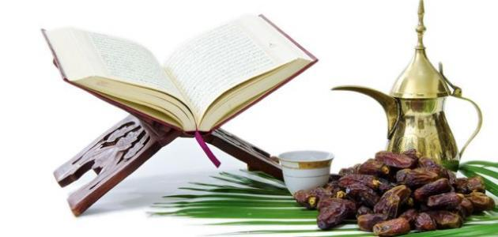

| الرئيسيه | الشهاده | الصلاه | الزكاه | الصوم | الحج |
الصَّوْمُ في الإسلام نوع من العبادات الهامة، وأصل الصَّوْمُ (ص و مـ)، يقال: صام صَوْمًا وصِيامًا أيضًا، في اللغة: مطلق الإمساك،[1] أو الكف عن الشيء، ومنه قول الله تعالى حكاية عن مريم: ﴿فَقُولِيٓ إِنِّي نَذَرۡتُ لِلرَّحۡمَٰنِ صَوۡمٗا..﴾[2] أي: إمساكاً عن الكلام. والصوم في الشرع الإسلامي عبادة بمعنى: «الإمساك عن المفطرات على وجه مخصوص، وشروط مخصوصة من طلوع الفجر الثاني، إلى غروب الشمس، بنية». ولا يقتصر على صوم شهر رمضان، بل يشمل جميع أنواع الصوم، وهو إما فرض عين وهو صوم شهر رمضان من كل عام، وما عداه إما واجب مثل: صوم القضاء أو النذر أو الكفارة. وإما تطوع ويشمل: المسنون المؤكد، والمندوب (المستحب) والنفل المطلق، ومن الصوم أيضا ما يشرع تركه وهو الصوم المنهي عنه كصيام يوم الشك، ويحرم صوم يوم عيدي الفطر والأضحى.
